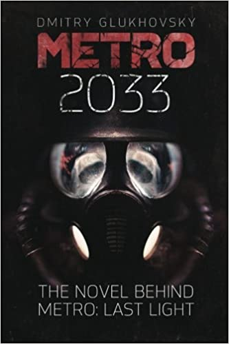
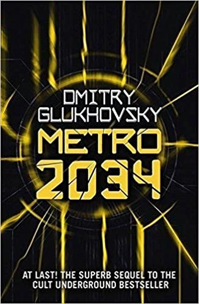
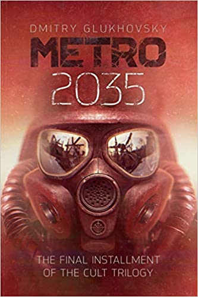

< regresar

Otros Titulos:
Metro 2034
The novels that inspired the bestselling games
Metro 2035
The novels that inspired the bestselling games
Metro 2033: Version en español (Volumen 1) (2021)
Por Dmitri Glujovski (Autor)
Libro 1 de 3 en la colección Metro
Metro 2033
Metro 2033 es una novela de ficción posapocalíptica de 2002 del autor ruso Dmitry Glukhovsky.
Está ubicado dentro del Metro de Moscú, donde los últimos sobrevivientes se esconden después
de un holocausto nuclear global. Le han seguido dos secuelas, Metro 2034 y Metro 2035, y generó
la franquicia de medios de Metro.
Acerda del autor:
Dmitri Glujovski empieza a escribir el libro durante sus años de secundaria pero no será realmente hasta la universidad cuando empieza a escribir los primeros capítulos. El mismo durante una de sus conferencias en Madrid en 2012, cita que tiene influencia de autores de ciencia ficción como estadounidense Ray Bradbury, el polaco Stanislaw Lem, el colombiano Gabriel García Márquez, el argentino Borges o también el francés Boris Vian.